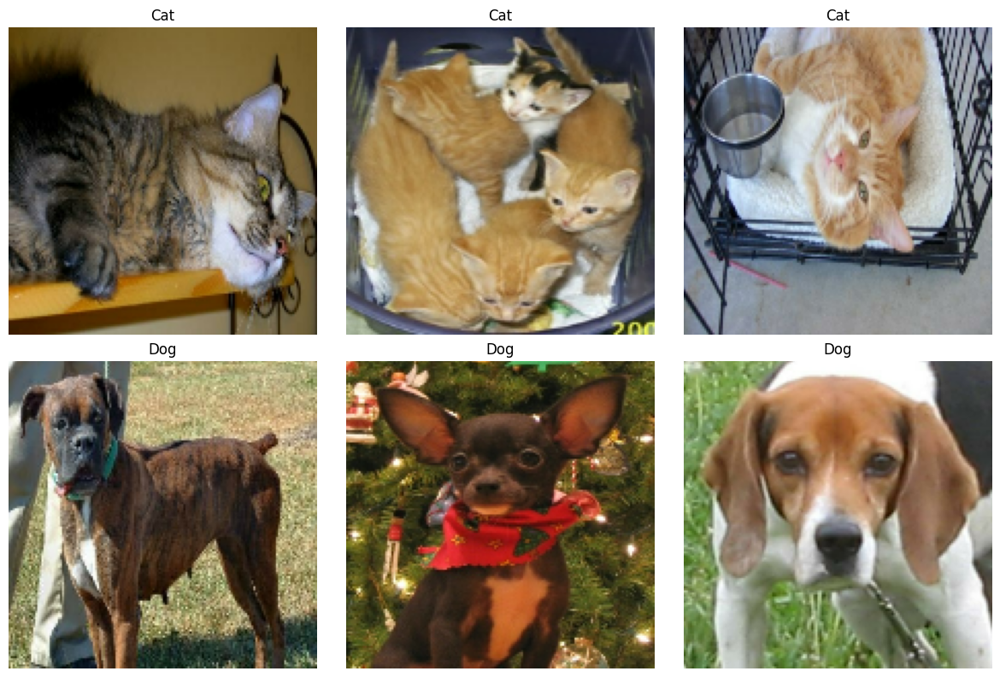
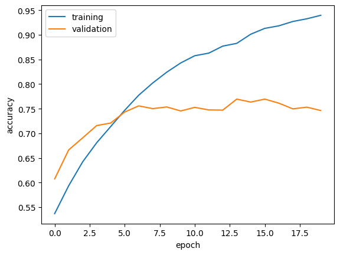
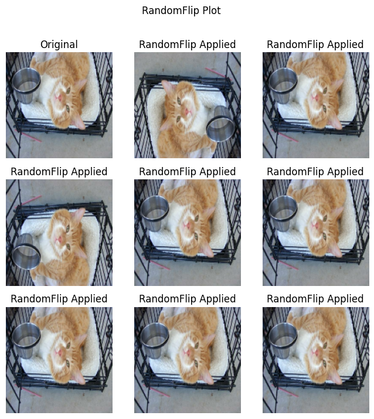
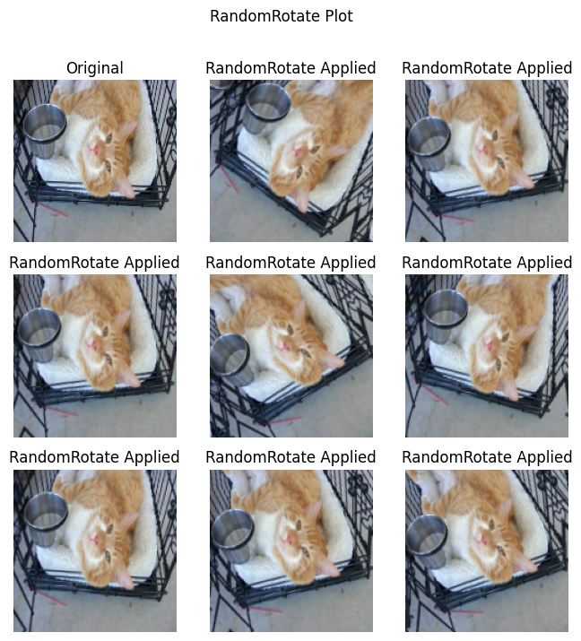
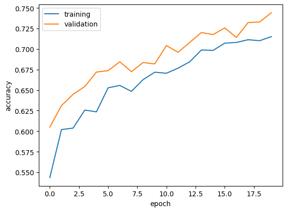
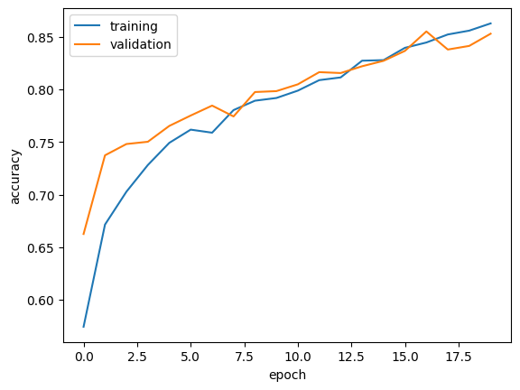
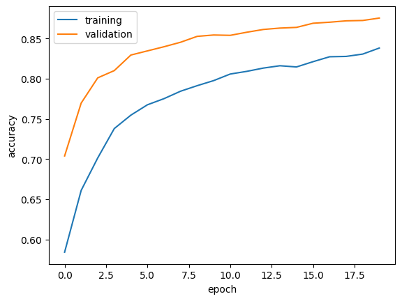

# Load Packages
import os
import numpy as np
import tensorflow as tf
from tensorflow import keras
import matplotlib.pyplot as plt
import tensorflow_datasets as tfds
from tensorflow import data as tf_data
from keras import utils, models, layers
from tensorflow.keras.optimizers import AdamIntroduction
In this tutorial, we will explore simple binary image classification using four models with the Python package Keras. We will start by building a baseline model that predicts based on the highest probability, and then progress to a more advanced model. Next, we will apply tuning techniques and modify the dataset to enhance prediction accuracy. Additionally, I will demonstrate how to leverage pre-trained models through transfer learning to further improve performance.
Import Packages
To get started, let’s load all the necessary packages for today’s task:
Load Data
We will obtain the dataset using the following code segment. The data will be split as follows: 40% for training, 10% for validation during model training, and another 10% to evaluate the model’s performance at the end. Remember to print the number of images in each dataset to check if the data is properly loaded and segmented.
# Load Dataset
train_ds, validation_ds, test_ds = tfds.load(
"cats_vs_dogs",
# 40% for training, 10% for validation, and 10% for test (the rest unused)
split=["train[:40%]", "train[40%:50%]", "train[50%:60%]"],
as_supervised=True, # Include labels
)
print(f"Number of training samples: {train_ds.cardinality()}")
print(f"Number of validation samples: {validation_ds.cardinality()}")
print(f"Number of test samples: {test_ds.cardinality()}")Downloading and preparing dataset 786.67 MiB (download: 786.67 MiB, generated: 1.04 GiB, total: 1.81 GiB) to /root/tensorflow_datasets/cats_vs_dogs/4.0.1...Corrupt JPEG data: 239 extraneous bytes before marker 0xd9
Corrupt JPEG data: 214 extraneous bytes before marker 0xd9
Corrupt JPEG data: 128 extraneous bytes before marker 0xd9
Corrupt JPEG data: 99 extraneous bytes before marker 0xd9
Corrupt JPEG data: 1153 extraneous bytes before marker 0xd9
Corrupt JPEG data: 396 extraneous bytes before marker 0xd9
Corrupt JPEG data: 228 extraneous bytes before marker 0xd9
Corrupt JPEG data: 162 extraneous bytes before marker 0xd9
Warning: unknown JFIF revision number 0.00
Corrupt JPEG data: 1403 extraneous bytes before marker 0xd9
Corrupt JPEG data: 252 extraneous bytes before marker 0xd9
Corrupt JPEG data: 2226 extraneous bytes before marker 0xd9
Corrupt JPEG data: 65 extraneous bytes before marker 0xd9Dataset cats_vs_dogs downloaded and prepared to /root/tensorflow_datasets/cats_vs_dogs/4.0.1. Subsequent calls will reuse this data.
Number of training samples: 9305
Number of validation samples: 2326
Number of test samples: 2326Since the dataset contains images of varying sizes, this unorganized data is not ideal. To address this, we use the following code block to resize all images to a square shape, with a height and width of 150 pixels each.
# Revise Image Size to 150x150
resize_fn = keras.layers.Resizing(150, 150)
train_ds = train_ds.map(lambda x, y: (resize_fn(x), y))
validation_ds = validation_ds.map(lambda x, y: (resize_fn(x), y))
test_ds = test_ds.map(lambda x, y: (resize_fn(x), y))For better performance with the models in the later stages, we create data batches. A batch is a dictionary that collects 64 images at a time to improve processing efficiency. The following code segment implements this:
# Rapidly Reading Data
batch_size = 64
train_ds = train_ds.batch(batch_size).prefetch(tf_data.AUTOTUNE).cache()
validation_ds = validation_ds.batch(batch_size).prefetch(tf_data.AUTOTUNE).cache()
test_ds = test_ds.batch(batch_size).prefetch(tf_data.AUTOTUNE).cache()This implementation optimizes data loading but is not covered in this article. For more information, feel free to explore more about this in the TensorFlow Data Performance guide.
Implent Two-Row Visualization Function
Now that we have successfully loaded the data, you might be curious about what the images look like. In this section, let’s explore the images in the dataset. We’ll build a function that displays three images of cats and three images of dogs in two rows. In the dataset, images of cats are labeled as 0, and images of dogs are labeled as 1. Using train_ds.take(1), we can retrieve the 64 images from the first batch—let’s start there.
We will iterate through this batch, checking the labels of each image. The images will be stored in separate lists based on their labels. Once we have collected three cat images and three dog images, we will plot them. The plot will consist of six subplots. Using plt.imshow, we will display each image in the corresponding position. Here is the full implementation of the function:
def two_row_visualization(ds):
"""
Create a two-row visualization with 3 images of cat in 1st row and 3 images of dog in 2nd row
"""
# Select the first batch with 32 images
for images, labels in ds.take(1):
# Initiate two list to store
cat_img, dog_img = [], []
# Iterate through the batch
for i, (image, label) in enumerate(zip(images, labels)):
if label == 0:
cat_img.append(image)
elif label == 1:
dog_img.append(image)
# Break out of the loop with sufficient images in each list
if len(cat_img) == 3 and len(cat_img) == 3:
break
plt.figure(figsize=(12, 8))
# Plot the images of cats in the first row
for i in range(3):
ax = plt.subplot(2, 3, i + 1)
plt.imshow(cat_img[i].numpy().astype("int32"))
plt.title("Cat")
plt.axis("off")
# Plot the dog images in the second row
for i in range(3):
ax = plt.subplot(2, 3, i + 4)
plt.imshow(dog_img[i].numpy().astype("int32"))
plt.title("Dog")
plt.axis("off")
plt.tight_layout()
plt.show()two_row_visualization(train_ds)
Check Label Frequencies & Baseline Model
As mentioned in the introduction, we will first create a baseline model that guesses the most frequent label to achieve the highest possible accuracy. To do this, we will retrieve all the labels from the training dataset using the following line of code:
labels_iterator= train_ds.unbatch().map(lambda image, label: label).as_numpy_iterator()Let’s iterate through the labels we obtained and count the total number of 0s (cats) and 1s (dogs). Then, we will print the number of images corresponding to each label: the number of dog images (1) and the number of cat images (0).
# Initialize counter
counter_cat = 0
counter_dog = 0
# Iterate over labels_iterator
for label in labels_iterator:
if label == 0:
counter_cat += 1
else:
counter_dog += 1
print(f"Number of Images of Cats : {counter_cat}")
print(f"Number of Images of Dogs: {counter_dog}")Number of Images of Cats : 4637
Number of Images of Dogs: 4668By comparing the number of 1s and 0s, we see that the numbers are roughly equal, with a slightly higher count of 1s. As a result, our baseline model will predict 1 (dog) for all inputs, meaning it classifies every image as a dog. The accuracy for the training set will be the proportion of dog images, which is approximately 50.17%, slightly better than random guessing.
baseline = counter_dog / (counter_cat + counter_dog)
print(f"Accuracy of Baseline Model: {round(baseline, 4)}")Accuracy of Baseline Model: 0.5017The baseline machine learning model predicts the most frequent label in the dataset. Based on our analysis, the most frequent label in the training dataset is 1, which corresponds to “dog”. As a result, the model’s accuracy is expected to be approximately 50.17%, reflecting the proportion of instances in the dataset that are labeled as ‘dog.’
Initial Model
Now, let’s dive into building a simple, yet effective model to classify images. We’ll break down the different layers step by step to help you understand how they work together.
The input layer
layers.Inputis where we define the shape of the data that will flow into the model. In this case, the input images are 150x150 pixels with 3 color channels (RGB). This layer doesn’t perform any computation but sets up the structure for the next layers to handle the data.The
Conv2Dlayer is like a filter that looks for patterns in the image, such as edges, corners, or textures. It uses a set of kernels that slide over the image and perform convolutions. Theactivation='relu'function is used here to introduce non-linearity, allowing the model to learn more complex patterns in the data.After the convolution, we apply
layers.MaxPooling2D. This operation takes the output from theConv2Dlayer and reduces the size by selecting the maximum value from each block of defined size. This helps reduce the number of computations and also makes the model more robust by focusing on the most important features.We flatten the multi-dimensional output from the convolutional and pooling layers into a one-dimensional vector with
layers.Flatten()after extracting all the important features from the images.The
denselayer is a fully connected layer. This layer is connected to every neuron in the previous layer. Therelufunction helps the model learn complex relationships between the extracted features and the output.To prevent the model from overfitting, we introduce
dropoutlayer with different rates. This means that during training, a certain amount of the neurons as we defined in rates will randomly drop out from the algorithm.
Here’s a rough model to get you started:
# Initialize model1
model1 = models.Sequential([
layers.Input((150, 150, 3)),
layers.Conv2D(128, (3, 3), activation='relu'),
layers.MaxPooling2D((2, 2)),
layers.Conv2D(256, (3, 3), activation='relu'),
layers.MaxPooling2D((2, 2)),
layers.Flatten(),
layers.Dense(256, activation='relu'),
layers.Dropout(0.5),
layers.Dense(1, activation='sigmoid')
])We compile the model by defining an optimizer (Adam ) to update the model’s weights during training, a loss function to calculate the error in binary classification, and a metric to evaluate the model’s performance. The small learning rate ensures slow and steady fine-tuning of the model, while BinaryCrossentropy computes the difference between predicted probabilities and actual labels, and BinaryAccuracy tracks the percentage of correct predictions. This setup allows us to monitor and adjust the model’s training process effectively.
We then train the model with 20 epochs. During each epoch, the model will adjust its weights based on the training data. The model performance will also be evaluated on validation dataset
# Compile and train the model
model1.compile(optimizer = Adam(learning_rate=0.00005),
loss = keras.losses.BinaryCrossentropy(from_logits=True),
metrics = [keras.metrics.BinaryAccuracy()])
history1 = model1.fit(train_ds,
epochs = 20,
validation_data = validation_ds)Epoch 1/20/opt/conda/lib/python3.10/site-packages/keras/src/backend/tensorflow/nn.py:674: UserWarning: "`binary_crossentropy` received `from_logits=True`, but the `output` argument was produced by a Sigmoid activation and thus does not represent logits. Was this intended?
output, from_logits = _get_logits(
WARNING: All log messages before absl::InitializeLog() is called are written to STDERR
I0000 00:00:1732336561.787061 101 service.cc:145] XLA service 0x7d875c008a40 initialized for platform CUDA (this does not guarantee that XLA will be used). Devices:
I0000 00:00:1732336561.787119 101 service.cc:153] StreamExecutor device (0): Tesla P100-PCIE-16GB, Compute Capability 6.0 2/146 ━━━━━━━━━━━━━━━━━━━━ 10s 75ms/step - binary_accuracy: 0.4766 - loss: 52.6154I0000 00:00:1732336571.047614 101 device_compiler.h:188] Compiled cluster using XLA! This line is logged at most once for the lifetime of the process.146/146 ━━━━━━━━━━━━━━━━━━━━ 29s 127ms/step - binary_accuracy: 0.5193 - loss: 21.3501 - val_binary_accuracy: 0.6075 - val_loss: 0.6669
Epoch 2/20
146/146 ━━━━━━━━━━━━━━━━━━━━ 11s 77ms/step - binary_accuracy: 0.5815 - loss: 0.6679 - val_binary_accuracy: 0.6664 - val_loss: 0.6221
Epoch 3/20
146/146 ━━━━━━━━━━━━━━━━━━━━ 11s 77ms/step - binary_accuracy: 0.6398 - loss: 0.6320 - val_binary_accuracy: 0.6909 - val_loss: 0.6057
Epoch 4/20
146/146 ━━━━━━━━━━━━━━━━━━━━ 11s 77ms/step - binary_accuracy: 0.6735 - loss: 0.6017 - val_binary_accuracy: 0.7158 - val_loss: 0.5868
Epoch 5/20
146/146 ━━━━━━━━━━━━━━━━━━━━ 11s 76ms/step - binary_accuracy: 0.7092 - loss: 0.5577 - val_binary_accuracy: 0.7210 - val_loss: 0.5636
Epoch 6/20
146/146 ━━━━━━━━━━━━━━━━━━━━ 11s 76ms/step - binary_accuracy: 0.7360 - loss: 0.5142 - val_binary_accuracy: 0.7433 - val_loss: 0.5422
Epoch 7/20
146/146 ━━━━━━━━━━━━━━━━━━━━ 11s 76ms/step - binary_accuracy: 0.7699 - loss: 0.4717 - val_binary_accuracy: 0.7558 - val_loss: 0.5209
Epoch 8/20
146/146 ━━━━━━━━━━━━━━━━━━━━ 11s 76ms/step - binary_accuracy: 0.8001 - loss: 0.4337 - val_binary_accuracy: 0.7502 - val_loss: 0.5186
Epoch 9/20
146/146 ━━━━━━━━━━━━━━━━━━━━ 11s 76ms/step - binary_accuracy: 0.8164 - loss: 0.3858 - val_binary_accuracy: 0.7537 - val_loss: 0.5191
Epoch 10/20
146/146 ━━━━━━━━━━━━━━━━━━━━ 11s 76ms/step - binary_accuracy: 0.8409 - loss: 0.3504 - val_binary_accuracy: 0.7455 - val_loss: 0.5516
Epoch 11/20
146/146 ━━━━━━━━━━━━━━━━━━━━ 11s 76ms/step - binary_accuracy: 0.8533 - loss: 0.3149 - val_binary_accuracy: 0.7528 - val_loss: 0.5455
Epoch 12/20
146/146 ━━━━━━━━━━━━━━━━━━━━ 11s 76ms/step - binary_accuracy: 0.8645 - loss: 0.3032 - val_binary_accuracy: 0.7476 - val_loss: 0.5623
Epoch 13/20
146/146 ━━━━━━━━━━━━━━━━━━━━ 11s 76ms/step - binary_accuracy: 0.8761 - loss: 0.2724 - val_binary_accuracy: 0.7472 - val_loss: 0.6292
Epoch 14/20
146/146 ━━━━━━━━━━━━━━━━━━━━ 11s 76ms/step - binary_accuracy: 0.8807 - loss: 0.2581 - val_binary_accuracy: 0.7696 - val_loss: 0.5803
Epoch 15/20
146/146 ━━━━━━━━━━━━━━━━━━━━ 11s 76ms/step - binary_accuracy: 0.9017 - loss: 0.2176 - val_binary_accuracy: 0.7635 - val_loss: 0.6499
Epoch 16/20
146/146 ━━━━━━━━━━━━━━━━━━━━ 11s 76ms/step - binary_accuracy: 0.9090 - loss: 0.1983 - val_binary_accuracy: 0.7696 - val_loss: 0.6786
Epoch 17/20
146/146 ━━━━━━━━━━━━━━━━━━━━ 11s 76ms/step - binary_accuracy: 0.9191 - loss: 0.1723 - val_binary_accuracy: 0.7614 - val_loss: 0.6623
Epoch 18/20
146/146 ━━━━━━━━━━━━━━━━━━━━ 11s 76ms/step - binary_accuracy: 0.9258 - loss: 0.1625 - val_binary_accuracy: 0.7498 - val_loss: 0.7207
Epoch 19/20
146/146 ━━━━━━━━━━━━━━━━━━━━ 11s 76ms/step - binary_accuracy: 0.9298 - loss: 0.1533 - val_binary_accuracy: 0.7532 - val_loss: 0.7402
Epoch 20/20
146/146 ━━━━━━━━━━━━━━━━━━━━ 11s 76ms/step - binary_accuracy: 0.9394 - loss: 0.1330 - val_binary_accuracy: 0.7463 - val_loss: 0.8329The function plot_accuracy is designed to visualize the model’s training and validation accuracy over epochs. It takes in the history object from the model training process, which contains the accuracy data. The function plots the training accuracy (history.history["binary_accuracy"]) and validation accuracy (history.history["val_binary_accuracy"]) against the number of epochs.
def plot_accuracy(history):
plt.plot(history.history["binary_accuracy"], label = "training")
plt.plot(history.history["val_binary_accuracy"], label = "validation")
plt.gca().set(xlabel = "epoch", ylabel = "accuracy")
plt.legend()
plt.show()Here’s the visualization of the training and validation accuracy:
plot_accuracy(history1)
The model’s accuracy may not be ideal initially, but there are several strategies you can try to improve its performance. I experimented with different dropout rates to optimize the model’s performance. To enhance feature extraction, I increased the number of filters in the Conv2D layers and expanded the capacity of the dense layer. Additionally, I tested various learning rates, including 0.001, 0.01, and 0.00001. Instead of specifying the number of classes in the Dense layer, I adjusted the output to be a binary sigmoid. After tuning the initial model, its accuracy stabilized between 71% and 78% at the end during each training. Compared to the baseline accuracy of 50.17%, the first model demonstrated a notable performance improvement, achieving an increase of around 21% to 28%. Moreover, overfitting is evident as the model continues to improve on the training set, achieving higher accuracy and lower loss over epochs. However, the validation performance deteriorates, with increasing validation loss and fluctuating accuracy, indicating the model is failing to generalize well to unseen data.
Introduce Data Augmentation to the Model
As the first model did slightly better, we will advance the model with data augmentation. Data augmentation is a technique used to artificially increase the size of your training dataset by applying various transformations to the existing data. This helps prevent overfitting and improves the generalization of the model. Common augmentations include rotating, flipping, zooming, and shifting images.
We will begin by implementing image flipping as the first step in data augmentation:
# Initialize the RandomFlip layer
flip_layers = [layers.RandomFlip("horizontal_and_vertical")]
def data_augmentation_flip(x):
for layer in flip_layers:
x = layer(x)
return xThis block of code is provided for you to experiment with data augmentation visualization. The first image will display the original, while the following eight will showcase various random data augmentation techniques applied to the image.
def plotting(function_name, effect_name):
for images, labels in train_ds.take(1):
plt.figure(figsize=(8, 8))
plt.suptitle(f"{effect_name} Plot")
image = images[7]
# Plot the original image in the first subplot
ax = plt.subplot(3, 3, 1)
plt.imshow(image.numpy().astype("int32"))
plt.title("Original")
plt.axis("off")
# Plot augmented images in the remaining subplots
for i in range(8):
ax = plt.subplot(3, 3, i + 2)
augmented_image = function_name(np.expand_dims(image, 0))
plt.imshow(np.array(augmented_image[0]).astype("int32"))
plt.title(f"{effect_name} Applied")
plt.axis("off")
plt.show()Here, we used the RandomFlip defined above and visualized the results. Some of the images are flipped horizontally and vertically as the command "horizontal_and_vertical".
plotting(data_augmentation_flip, "RandomFlip")
We will do the same for the RandomRotation function, applying it to the images and visualizing the results. The images will be randomly rotated within a specified range(0.1 in this case), adding more variation to the dataset.
# Initialize the RandomFlip layer
rotate_layers = [layers.RandomRotation(0.1)]
def data_augmentation_rotate(x):
for layer in rotate_layers:
x = layer(x)
return xplotting(data_augmentation_rotate, "RandomRotate")
Now, in addition to the previous model, we add data augmentation layers to increase the variety of the training images. These augmentation layers, such as random flipping and rotation, may help the model generalize better. Along with this, we will need to fine-tune the hyperparameters, such as the learning rate and dropout rate to maintain and improve the accuracy of the model. Here’s how the updated model could look with data augmentation added:
# Initialize model2
model2 = models.Sequential([
layers.Input((150, 150, 3)),
layers.RandomFlip("horizontal_and_vertical"),
layers.RandomRotation(0.1),
layers.Conv2D(64, (3, 3), activation='relu'),
layers.MaxPooling2D((2, 2)),
layers.Conv2D(64, (3, 3), activation='relu'),
layers.MaxPooling2D((2, 2)),
layers.Flatten(),
layers.Dense(256, activation='relu'),
layers.Dropout(0.1),
layers.Dense(1, activation='sigmoid')
])The compiling and training processes remain the same as before.
# Compile and train the model
model2.compile(optimizer = Adam(learning_rate=0.00005),
loss = keras.losses.BinaryCrossentropy(from_logits=True),
metrics = [keras.metrics.BinaryAccuracy()])
history2 = model2.fit(train_ds,
epochs = 20,
validation_data = validation_ds)Epoch 1/20
146/146 ━━━━━━━━━━━━━━━━━━━━ 9s 45ms/step - binary_accuracy: 0.5313 - loss: 13.0350 - val_binary_accuracy: 0.6049 - val_loss: 0.6675
Epoch 2/20
146/146 ━━━━━━━━━━━━━━━━━━━━ 6s 42ms/step - binary_accuracy: 0.5987 - loss: 0.6647 - val_binary_accuracy: 0.6311 - val_loss: 0.6433
Epoch 3/20
146/146 ━━━━━━━━━━━━━━━━━━━━ 6s 42ms/step - binary_accuracy: 0.6005 - loss: 0.6561 - val_binary_accuracy: 0.6449 - val_loss: 0.6297
Epoch 4/20
146/146 ━━━━━━━━━━━━━━━━━━━━ 6s 42ms/step - binary_accuracy: 0.6251 - loss: 0.6378 - val_binary_accuracy: 0.6543 - val_loss: 0.6275
Epoch 5/20
146/146 ━━━━━━━━━━━━━━━━━━━━ 6s 42ms/step - binary_accuracy: 0.6237 - loss: 0.6403 - val_binary_accuracy: 0.6720 - val_loss: 0.6117
Epoch 6/20
146/146 ━━━━━━━━━━━━━━━━━━━━ 6s 42ms/step - binary_accuracy: 0.6502 - loss: 0.6205 - val_binary_accuracy: 0.6737 - val_loss: 0.6205
Epoch 7/20
146/146 ━━━━━━━━━━━━━━━━━━━━ 6s 42ms/step - binary_accuracy: 0.6571 - loss: 0.6227 - val_binary_accuracy: 0.6844 - val_loss: 0.5914
Epoch 8/20
146/146 ━━━━━━━━━━━━━━━━━━━━ 6s 42ms/step - binary_accuracy: 0.6560 - loss: 0.6106 - val_binary_accuracy: 0.6724 - val_loss: 0.6065
Epoch 9/20
146/146 ━━━━━━━━━━━━━━━━━━━━ 6s 42ms/step - binary_accuracy: 0.6595 - loss: 0.6154 - val_binary_accuracy: 0.6836 - val_loss: 0.5896
Epoch 10/20
146/146 ━━━━━━━━━━━━━━━━━━━━ 6s 42ms/step - binary_accuracy: 0.6696 - loss: 0.6036 - val_binary_accuracy: 0.6819 - val_loss: 0.5888
Epoch 11/20
146/146 ━━━━━━━━━━━━━━━━━━━━ 6s 42ms/step - binary_accuracy: 0.6650 - loss: 0.6049 - val_binary_accuracy: 0.7042 - val_loss: 0.5761
Epoch 12/20
146/146 ━━━━━━━━━━━━━━━━━━━━ 6s 42ms/step - binary_accuracy: 0.6752 - loss: 0.5973 - val_binary_accuracy: 0.6960 - val_loss: 0.5744
Epoch 13/20
146/146 ━━━━━━━━━━━━━━━━━━━━ 6s 42ms/step - binary_accuracy: 0.6850 - loss: 0.5843 - val_binary_accuracy: 0.7081 - val_loss: 0.5699
Epoch 14/20
146/146 ━━━━━━━━━━━━━━━━━━━━ 6s 42ms/step - binary_accuracy: 0.6991 - loss: 0.5747 - val_binary_accuracy: 0.7201 - val_loss: 0.5551
Epoch 15/20
146/146 ━━━━━━━━━━━━━━━━━━━━ 6s 42ms/step - binary_accuracy: 0.7003 - loss: 0.5708 - val_binary_accuracy: 0.7175 - val_loss: 0.5531
Epoch 16/20
146/146 ━━━━━━━━━━━━━━━━━━━━ 6s 42ms/step - binary_accuracy: 0.7081 - loss: 0.5600 - val_binary_accuracy: 0.7257 - val_loss: 0.5479
Epoch 17/20
146/146 ━━━━━━━━━━━━━━━━━━━━ 6s 42ms/step - binary_accuracy: 0.7110 - loss: 0.5574 - val_binary_accuracy: 0.7141 - val_loss: 0.5535
Epoch 18/20
146/146 ━━━━━━━━━━━━━━━━━━━━ 6s 42ms/step - binary_accuracy: 0.7083 - loss: 0.5622 - val_binary_accuracy: 0.7322 - val_loss: 0.5400
Epoch 19/20
146/146 ━━━━━━━━━━━━━━━━━━━━ 6s 42ms/step - binary_accuracy: 0.7052 - loss: 0.5616 - val_binary_accuracy: 0.7330 - val_loss: 0.5336
Epoch 20/20
146/146 ━━━━━━━━━━━━━━━━━━━━ 6s 42ms/step - binary_accuracy: 0.7052 - loss: 0.5562 - val_binary_accuracy: 0.7442 - val_loss: 0.5276We will also visualize the accuracy across different epochs to examine how the model generalizes and its convergence rate. This will help us assess whether the model is improving over time and if it is successfully learning from the training data.
plot_accuracy(history2)
The accuracy of the second model with data augmentation stabilized between 68% and 75% toward the end of training. While keeping other hyperparameters the same, the model’s accuracy significantly dropped compared to the first model. After tuning, the accuracy of the second model remained slightly lower throughout each training cycle but very similar to the performance of the first model. There is no sign of overfitting in this model, as the validation accuracy remained higher than the training accuracy for most of the training period.
Advance Model with Data Preprocessing
As you can see in the above section, data augmentation alone doesn’t make a significant difference. In this section, we will focus on improving the model with data preprocessing. Here is the technical code for data preprocessing, which we will incorporate into our code.
# Initialize preprocessor
i = keras.Input(shape=(150, 150, 3))
# The pixel values have the range of (0, 255), but many models will work better if rescaled to (-1, 1.)
# outputs: `(inputs * scale) + offset`
scale_layer = keras.layers.Rescaling(scale=1 / 127.5, offset=-1)
x = scale_layer(i)
preprocessor = keras.Model(inputs = i, outputs = x)We will replace the input layer with the preprocessed data, and the rest of the model will be left for further layer construction and development. This will help improve the model’s performance by ensuring the data is properly processed before being fed into the model.
# Initialize model3
model3 = models.Sequential([
preprocessor,
layers.RandomFlip("horizontal_and_vertical"),
layers.RandomRotation(0.1),
layers.Conv2D(32, (3, 3), activation='relu', kernel_regularizer = keras.regularizers.l2(0.01)),
layers.MaxPooling2D((2, 2)),
layers.Conv2D(64, (3, 3), activation='relu'),
layers.MaxPooling2D((2, 2)),
layers.Conv2D(128, (3, 3), activation='relu'),
layers.MaxPooling2D((2, 2)),
layers.Conv2D(256, (3, 3), activation='relu'),
layers.MaxPooling2D((2, 2)),
layers.Flatten(),
layers.Dense(512, activation='relu'),
layers.Dropout(0.5),
layers.Dense(1, activation='sigmoid')
])Compile and train the model, making sure to tune the hyperparameters for optimal performance.
# Compile and train the model
model3.compile(optimizer = Adam(learning_rate = 0.0005),
loss = keras.losses.BinaryCrossentropy(from_logits=True),
metrics = [keras.metrics.BinaryAccuracy()])
history3 = model3.fit(train_ds,
epochs = 20,
validation_data = validation_ds)Epoch 1/20
146/146 ━━━━━━━━━━━━━━━━━━━━ 8s 37ms/step - binary_accuracy: 0.5366 - loss: 0.7419 - val_binary_accuracy: 0.6625 - val_loss: 0.6473
Epoch 2/20
146/146 ━━━━━━━━━━━━━━━━━━━━ 5s 35ms/step - binary_accuracy: 0.6521 - loss: 0.6586 - val_binary_accuracy: 0.7373 - val_loss: 0.5678
Epoch 3/20
146/146 ━━━━━━━━━━━━━━━━━━━━ 5s 35ms/step - binary_accuracy: 0.6903 - loss: 0.6139 - val_binary_accuracy: 0.7481 - val_loss: 0.5482
Epoch 4/20
146/146 ━━━━━━━━━━━━━━━━━━━━ 5s 35ms/step - binary_accuracy: 0.7234 - loss: 0.5784 - val_binary_accuracy: 0.7502 - val_loss: 0.5320
Epoch 5/20
146/146 ━━━━━━━━━━━━━━━━━━━━ 5s 35ms/step - binary_accuracy: 0.7441 - loss: 0.5523 - val_binary_accuracy: 0.7653 - val_loss: 0.5245
Epoch 6/20
146/146 ━━━━━━━━━━━━━━━━━━━━ 5s 35ms/step - binary_accuracy: 0.7548 - loss: 0.5355 - val_binary_accuracy: 0.7752 - val_loss: 0.5076
Epoch 7/20
146/146 ━━━━━━━━━━━━━━━━━━━━ 5s 35ms/step - binary_accuracy: 0.7579 - loss: 0.5259 - val_binary_accuracy: 0.7846 - val_loss: 0.4930
Epoch 8/20
146/146 ━━━━━━━━━━━━━━━━━━━━ 5s 35ms/step - binary_accuracy: 0.7769 - loss: 0.5018 - val_binary_accuracy: 0.7743 - val_loss: 0.5288
Epoch 9/20
146/146 ━━━━━━━━━━━━━━━━━━━━ 5s 35ms/step - binary_accuracy: 0.7836 - loss: 0.4843 - val_binary_accuracy: 0.7975 - val_loss: 0.4670
Epoch 10/20
146/146 ━━━━━━━━━━━━━━━━━━━━ 5s 35ms/step - binary_accuracy: 0.7872 - loss: 0.4725 - val_binary_accuracy: 0.7984 - val_loss: 0.4527
Epoch 11/20
146/146 ━━━━━━━━━━━━━━━━━━━━ 5s 35ms/step - binary_accuracy: 0.7968 - loss: 0.4508 - val_binary_accuracy: 0.8048 - val_loss: 0.4457
Epoch 12/20
146/146 ━━━━━━━━━━━━━━━━━━━━ 5s 35ms/step - binary_accuracy: 0.8030 - loss: 0.4460 - val_binary_accuracy: 0.8164 - val_loss: 0.4352
Epoch 13/20
146/146 ━━━━━━━━━━━━━━━━━━━━ 5s 35ms/step - binary_accuracy: 0.8013 - loss: 0.4415 - val_binary_accuracy: 0.8156 - val_loss: 0.4279
Epoch 14/20
146/146 ━━━━━━━━━━━━━━━━━━━━ 5s 35ms/step - binary_accuracy: 0.8219 - loss: 0.4104 - val_binary_accuracy: 0.8220 - val_loss: 0.4198
Epoch 15/20
146/146 ━━━━━━━━━━━━━━━━━━━━ 5s 35ms/step - binary_accuracy: 0.8237 - loss: 0.4095 - val_binary_accuracy: 0.8272 - val_loss: 0.4080
Epoch 16/20
146/146 ━━━━━━━━━━━━━━━━━━━━ 5s 35ms/step - binary_accuracy: 0.8386 - loss: 0.3877 - val_binary_accuracy: 0.8366 - val_loss: 0.3846
Epoch 17/20
146/146 ━━━━━━━━━━━━━━━━━━━━ 5s 35ms/step - binary_accuracy: 0.8376 - loss: 0.3819 - val_binary_accuracy: 0.8551 - val_loss: 0.3581
Epoch 18/20
146/146 ━━━━━━━━━━━━━━━━━━━━ 5s 35ms/step - binary_accuracy: 0.8490 - loss: 0.3676 - val_binary_accuracy: 0.8379 - val_loss: 0.3885
Epoch 19/20
146/146 ━━━━━━━━━━━━━━━━━━━━ 5s 36ms/step - binary_accuracy: 0.8543 - loss: 0.3557 - val_binary_accuracy: 0.8414 - val_loss: 0.3773
Epoch 20/20
146/146 ━━━━━━━━━━━━━━━━━━━━ 5s 35ms/step - binary_accuracy: 0.8655 - loss: 0.3407 - val_binary_accuracy: 0.8530 - val_loss: 0.3600plot_accuracy(history3)
The accuracy of model3 with the data preprocessor stabilized between 82% and 85% by the end of training. The validation accuracy showed a significant improvement of about 10% compared to the initial model. Upon inspecting the accuracy line plot, there are no clear signs of overfitting. The accuracy for both the training and validation datasets progressed simultaneously throughout the training process.
Transfer Learning
Transfer learning allows us to leverage pre-trained models, saving time and resources while building powerful models. In this case, we use the MobileNetV3Large model, which has been pre-trained on a large dataset (ImageNet), to extract relevant features from our input images. We begin by defining the input shape of our images, then load the pre-trained MobileNetV3Large model without the top layers. This enables us to use the convolutional base for feature extraction. We then create a new model using the base model as a feature extractor, allowing us to build additional layers on top of our specific task.
IMG_SHAPE = (150, 150, 3)
base_model = keras.applications.MobileNetV3Large(input_shape=IMG_SHAPE,
include_top=False,
weights='imagenet')
base_model.trainable = True
i = keras.Input(shape=IMG_SHAPE)
x = base_model(i, training = True)
base_model_layer = keras.Model(inputs = i, outputs = x)To enhance the model’s performance further, we can selectively “unfreeze” some layers of the pre-trained base model. By default, all layers of the base model are frozen, meaning their weights will not be updated during training. But sometimes we want to fine-tune the base model to better adapt to our dataset.
base_model.trainable = True
fine_tune_at = 75
for layer in base_model.layers[:fine_tune_at]:
layer.trainable = FalseWe introduce the pre-trained model to incorporate it into our model.
# Initialize model4
model4 = models.Sequential([
preprocessor,
layers.RandomFlip("horizontal"),
layers.RandomRotation(0.1),
base_model,
layers.GlobalAveragePooling2D(),
layers.Dense(512, kernel_regularizer = keras.regularizers.l2(0.01)),
layers.BatchNormalization(),
layers.Activation('relu'),
layers.Dropout(0.5),
layers.Dense(256, kernel_regularizer = keras.regularizers.l2(0.01)),
layers.BatchNormalization(),
layers.Activation('relu'),
layers.Dropout(0.5),
layers.Dense(1, activation='sigmoid')
])We continued with the compiling and training process as we did before, using the same optimizer, loss function, and metrics. Once the model is trained, we will visualize the results to observe how the accuracy and loss evolve across the epochs.
# Compile and train the model
model4.compile(optimizer = Adam(learning_rate = 5e-6),
loss = keras.losses.BinaryCrossentropy(from_logits=False),
metrics = [keras.metrics.BinaryAccuracy()])
lr_schedule = keras.callbacks.LearningRateScheduler(
lambda epoch: 1e-5 * (0.1 ** (epoch // 10))
)
history4 = model4.fit(train_ds,
epochs = 20,
validation_data = validation_ds)Epoch 1/20
15/146 ━━━━━━━━━━━━━━━━━━━━ 11s 92ms/step - binary_accuracy: 0.9853 - loss: 0.2695plot_accuracy(history4)
The accuracy of model4 with the data preprocessor stabilized between 92% and 94% by the end of each training. The validation accuracy is approximately 20% higher than the initial model, showing a significant improvement. The stabilized model’s accuracy was notably better, starting with high validation accuracy similar to the first model’s stabilized accuracy. Upon reviewing the accuracy line plot, there are no clear indications of overfitting.
Using Transfer Learning can be complex, take a look at the model you just created:
We are using a total of 10,675,813 parameters!
model4.summary()Model: "sequential_47"
┏━━━━━━━━━━━━━━━━━━━━━━━━━━━━━━━━━┳━━━━━━━━━━━━━━━━━━━━━━━━┳━━━━━━━━━━━━━━━┓ ┃ Layer (type) ┃ Output Shape ┃ Param # ┃ ┡━━━━━━━━━━━━━━━━━━━━━━━━━━━━━━━━━╇━━━━━━━━━━━━━━━━━━━━━━━━╇━━━━━━━━━━━━━━━┩ │ functional_69 (Functional) │ (None, 150, 150, 3) │ 0 │ ├─────────────────────────────────┼────────────────────────┼───────────────┤ │ random_flip_53 (RandomFlip) │ (None, 150, 150, 3) │ 0 │ ├─────────────────────────────────┼────────────────────────┼───────────────┤ │ random_rotation_53 │ (None, 150, 150, 3) │ 0 │ │ (RandomRotation) │ │ │ ├─────────────────────────────────┼────────────────────────┼───────────────┤ │ MobilenetV3large (Functional) │ (None, 5, 5, 960) │ 2,996,352 │ ├─────────────────────────────────┼────────────────────────┼───────────────┤ │ global_average_pooling2d_35 │ (None, 960) │ 0 │ │ (GlobalAveragePooling2D) │ │ │ ├─────────────────────────────────┼────────────────────────┼───────────────┤ │ dense_112 (Dense) │ (None, 512) │ 492,032 │ ├─────────────────────────────────┼────────────────────────┼───────────────┤ │ batch_normalization_13 │ (None, 512) │ 2,048 │ │ (BatchNormalization) │ │ │ ├─────────────────────────────────┼────────────────────────┼───────────────┤ │ dropout_51 (Dropout) │ (None, 512) │ 0 │ ├─────────────────────────────────┼────────────────────────┼───────────────┤ │ dense_113 (Dense) │ (None, 256) │ 131,328 │ ├─────────────────────────────────┼────────────────────────┼───────────────┤ │ batch_normalization_14 │ (None, 256) │ 1,024 │ │ (BatchNormalization) │ │ │ ├─────────────────────────────────┼────────────────────────┼───────────────┤ │ dropout_52 (Dropout) │ (None, 256) │ 0 │ ├─────────────────────────────────┼────────────────────────┼───────────────┤ │ dense_114 (Dense) │ (None, 1) │ 257 │ └─────────────────────────────────┴────────────────────────┴───────────────┘
Total params: 10,675,813 (40.72 MB)
Trainable params: 3,526,385 (13.45 MB)
Non-trainable params: 96,656 (377.56 KB)
Optimizer params: 7,052,772 (26.90 MB)
Evaluate Model on Test Datasets
Now, we can use the most adequate model to evaluate the test dataset and assess its performance. This step allows us to gauge how well the model generalizes to new, unseen data, providing a clear indication of its effectiveness beyond the training and validation datasets.
test_loss, test_accuracy = model4.evaluate(test_ds.take(1).prefetch(tf.data.AUTOTUNE))
print(f"Test Loss: {test_loss:.4f}, Test Accuracy: {test_accuracy:.4f}")1/1 ━━━━━━━━━━━━━━━━━━━━ 0s 125ms/step - binary_accuracy: 0.8906 - loss: 8.3491
Test Loss: 8.3491, Test Accuracy: 0.8906